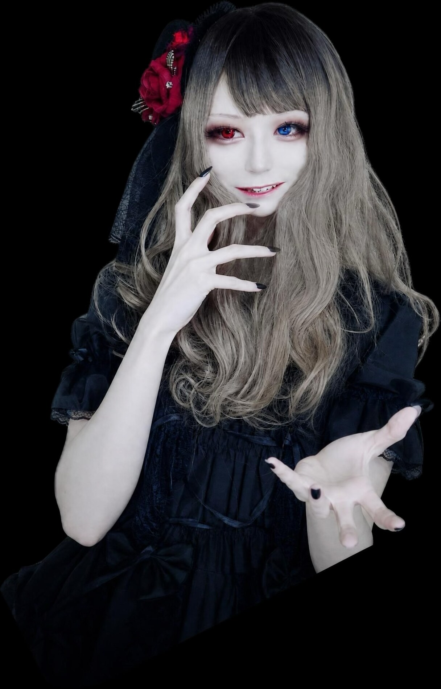

KOSHIGURO RITA
Where silence blooms
into a dark melody.
音楽、物語、そして黒の記憶を収めた公式ギャラリー。
CURATED EXPERIENCE
EXHIBITION
探すためではなく、出会うための展示。ジャケットに触れると作品記録が開きます。
COMPLETE COLLECTION
ARCHIVE
全作品を検索・並び替えできる機能的な一覧。

ARTIST PROFILE
越黒リタ
退廃、耽美、夜の静寂を軸に、ゴシックロック／ダークエレクトロニックの世界を描く音楽プロジェクト。
この場所は、楽曲とジャケットに刻まれた物語を保存するための私設展示室です。